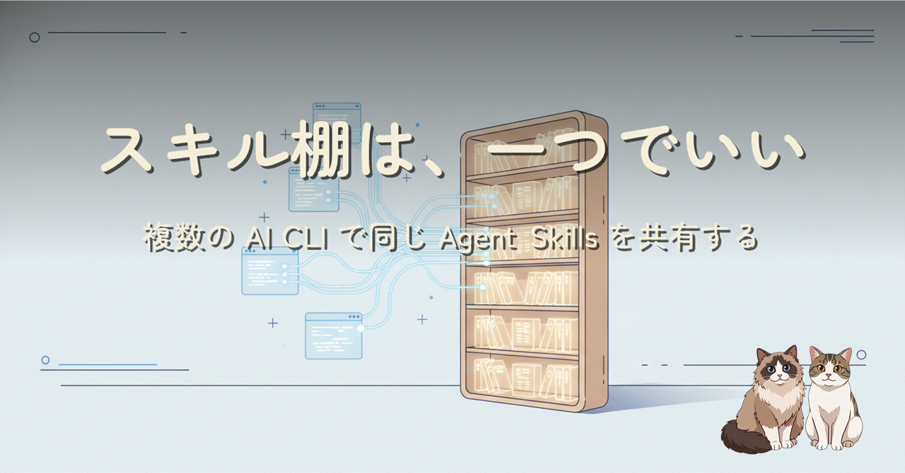

手元の AI コーディング CLI は 6 本。どれもが Agent Skills（SKILL.md を持つフォルダ）を扱えるようになった一方で、skill の置き場がバラバラになり「どれが正本か分からない棚」が増えていく。skill はディスク上の手順書であり、製品差は実質スキャンパスだけ。だから正本フォルダを 1 つ決めて、各 CLI の公式パスにはジャンクションで見せる。その設計判断の記録です。
AI コーディング CLI が並立する時代に、再利用可能な手順書（Agent Skills）をどう一元管理するか。コピー運用がメンテで破綻する理由、「skill は製品の魔法ではなく手順書である」という気づき、各 CLI のスキャンパス整理、そして「正本 1 つ + リンク」に落ち着くまでの過程を、やってはいけない 2 点（製品同梱の skill ディレクトリを上書きしない・個人環境の配線を公開リポに書かない）と合わせてまとめています。